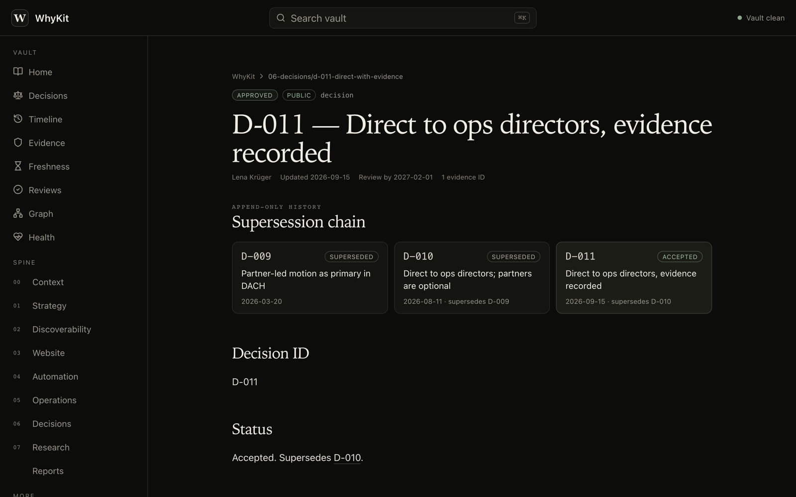
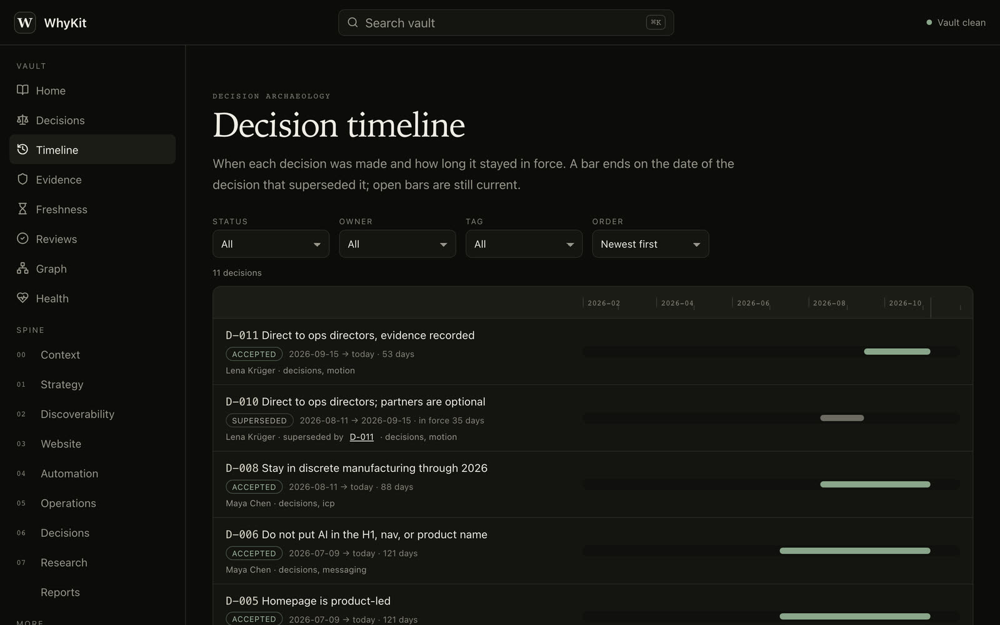
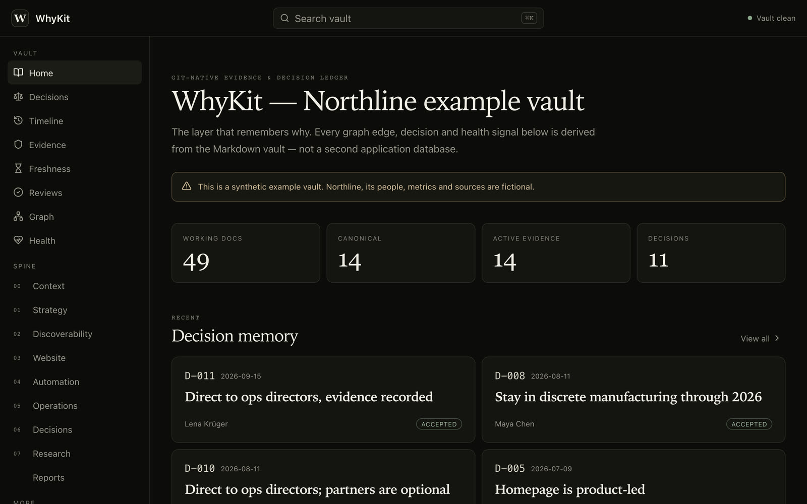

D-011approvedretired evidence
Direct to ops directors, evidence recorded
supersedesD-010
review_by2027-02-01
source_idsE-013
WhyKit keeps each decision next to the sources behind it, as Markdown files in Git. When a decision in force loses its evidence, the check in CI says so.
uv tool install whykit
Staged animation. Records and messages are real WhyKit 0.4.0 output on the Northline example vault.
Each source gets a stable E-ID in a register. A decision record cites it by ID. Accepted reasoning is not edited: a newer decision supersedes it, and the history check enforces that.
One row per source: what it is, where a person can inspect it and which claims it supports.
whykit new evidence
Context, choice, rationale and rejected alternatives, citing its sources by ID.
whykit new decision
Lint, repository policy and append-only history run on your machine and in pull requests.
whykit check --profile ci
Every accepted decision has a review_by date, and overdue ones are listed.
whykit review list
In the Northline example, D-010 was approved without citing a source. The fix was a successor record, not an edit, so all three records still read as they were written.
Statuses and the no evidence flag come from whykit trace on
examples/northline. The organisation and its records are fictional.
Explorer is an optional, read-only viewer built from the same Markdown. Here it shows the Northline example vault: decisions, a supersession chain, the evidence register and the review queue.
Recorded on 7 Nov 2026 in real time from a local build of Explorer for
examples/northline at commit 73d6833. Nothing is sped up.


whykit check runs the same rules on your machine and in a pull request. The
ci profile treats warnings as failures. Each message below is real output from WhyKit 0.4.0.
evidence.retiredevidence.missingwhykit historyreview_by.overduewikilink.missingsecret.detecteddecision.placeholder
The first six were produced by changing a copy of examples/northline; the last by the README
quickstart. The full rule list is in
docs/rules.md ↗.
A real session on a copy of the Northline vault, unedited. Pick a scenario.
The repository ships a composite Action. On a pull request it passes the base commit to the check, so rewritten decisions fail the job.
# .github/workflows/whykit.yml
on:
pull_request:
push:
branches: [main]
permissions:
contents: read
jobs:
vault:
runs-on: ubuntu-latest
steps:
- uses: actions/checkout@<sha>
with:
fetch-depth: 0
- uses: actions/setup-python@<sha>
with:
python-version: "3.12"
- uses: CometWeb-io/whykit@<sha>
with:
root: .
profile: ci
Shortened from docs/ci.md ↗, which pins each action to a full commit SHA.
The Markdown in Git is the only copy of the facts. Explorer, the CLI's JSON output and the MCP server are views computed from it. The vault also opens as an Obsidian vault.

A static site with no server code. It can also be built as one HTML file that opens from disk.
$ whykit status --today 2026-09-17 documents 57 decisions 11 evidence 14 active / 1 retired lint 0 error(s), 0 warning(s) review queue 1 due within 30 day(s) --json on every vault command
Query, trace, impact and context commands, with versioned JSON output for scripts and CI.
$ whykit-mcp --root ./vault
tools query · context · impact
status · pack · trace
backlinks
resource whykit://decisions
ceiling --max-sensitivity internal
writes none
Gives an agent read-only access to the vault over stdio or loopback HTTP, filtered by a sensitivity ceiling.
Python 3.11 or newer and uv. These are the README's commands; they were run against WhyKit 0.4.0 from PyPI on 7 Nov 2026.
Install the CLI as a uv tool, then create a vault: a folder of Markdown files.
Register a source, then a draft decision that cites it.
See the link, then lint. Five warnings name the work the template still needs.
Apache-2.0 code, tests on every push, reproducible builds and a security policy that says what the tool does not protect.
The suite runs on Python 3.11, 3.12, 3.13 and 3.14 and again on Windows, and both example vaults are linted strictly.
The core package uses the standard library alone. CI builds an SBOM of the installed wheel and fails if anything else appears in it.
CI builds the wheel and source distribution twice from one commit and requires identical bytes.
A test breaks the socket layer and runs every vault command. There is no telemetry, account or service.
Releases reach PyPI from a tag-triggered workflow with PEP 740 attestations. No PyPI token is stored in the repository.
Every workflow action is pinned to a commit, workflows are audited with zizmor and history is scanned for secrets with gitleaks.
These limits are part of the product contract, not small print.
A clean lint says a claim is cited. It cannot say the source is honest or the decision is right.
WhyKit does not check external sources for changes. It reports passed review dates; the re-read is yours.
Sensitivity labels filter what the MCP server returns. Repository permissions are the only access control, so keep real vaults private.
Version 0.4 adds optional note types older clients do not understand. Read the feature status and the upgrade guide first.
Install it, run it on the Northline example, then point it at a decision you will be asked about later.